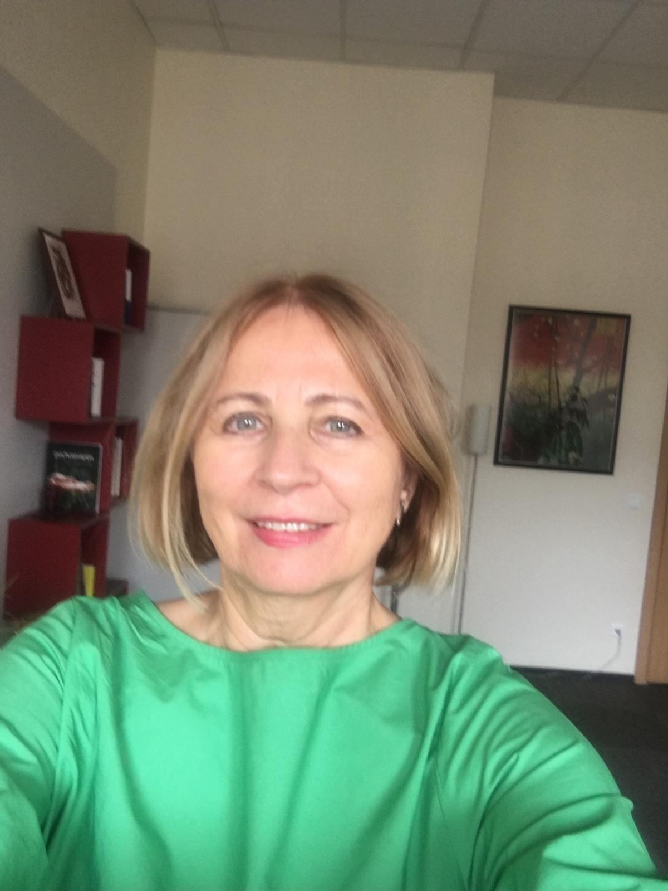

Individuali ir porų psichoterapija Vilniuje. Saugi erdvė gilesniam savęs pažinimui.
50 min. sesijos giliems ir stabiliems pokyčiams. Dirbama su nerimu, santykiais ir saviverte.
RegistruotisUnikali galimybė pažinti save ir mokytis kurti saugius ryšius analitinės grupės pagalba (5–9 asm.).
RegistruotisPsichologė psichoterapeutė, turinti aukščiausią kvalifikacinę kategoriją ir Europos psichoterapijos sertifikatą (ECP). Daugiau nei 20 metų dirbu psichoterapijos srityje ir padėjau daugiau nei 1000 žmonių geriau suprasti save, savo emocijas ir santykius.

Psichoterapija – tai saugi ir konfidenciali erdvė, kurioje galima giliau suprasti save, savo emocijas ir santykius su kitais. Terapijos metu svarbiausia yra atidus klausymasis, pagarba kiekvieno žmogaus patirčiai ir bendras kelias link didesnio vidinio aiškumo.
Vilniuje dirbu daugiau nei 20 metų, padedu žmonėms susidoroti su nerimu, santykių sunkumais, emociniais išgyvenimais ir gyvenimo krizėmis.
Psichodinaminė psichoterapija padeda geriau suprasti vidinius jausmus, pasikartojančius elgesio modelius ir santykių dinamiką.
Konsultacijos vyksta visiškai konfidencialiai, gerbiant kiekvieno žmogaus privatumą ir individualumą.
Kiekvieno žmogaus situacija yra unikali, todėl terapijos procesas pritaikomas individualiai.
Ilgalaikiai pokyčiai atsiranda per gilesnį savęs supratimą ir naujų būdų atradimą.
Jeigu ieškote psichologės ar psichoterapeutės Vilniuje, kviečiu susisiekti ir susitarti dėl pirmos konsultacijos.
Dažnai žmonės delsia kreiptis į specialistą, manydami, kad problemas reikia spręsti patiems. Tačiau yra situacijų, kada profesionalo pagalba gali būti ypač naudinga:
Nuolatinis nerimas, panikos atakos, sunkumai suvaldant emocijas.
Ilgalaikė liūdesys, energijos stoka, pomėgių praradimas.
Problemos šeimoje, poroje ar darbe, sunkumai bendraujant.
Skyrydos, netektis, darbo praradimas ar kiti reikšmingi pokyčiai.
Jei tos pačios problemos kartojasi gyvenime.
Norėjimas geriau suprasti save, savo elgesį ir emocijas.
Pirmoji konsultacija yra svarbus žingsnis pradedant terapinį kelią. Per ją susipažįstame, aptariame Jūsų situaciją ir nusprendžiame, ar galime dirbti kartu.
Susisiekite telefonu ar el. paštu ir trumpai aprašykite savo situaciją.
Pirmojo susitikimo metu (50 minučių) aptariame Jūsų situaciją.
Susitariame dėl reguliaraus susitikimų laiko.
Reguliariai tyrinėsime Jūsų emocijas, patirtis ir santykius.
Psichoterapija – tai pokalbio forma, kurioje specialistas padeda žmogui suprasti save, savo emocijas ir santykius su kitais. Tai saugi ir konfidenciali erdvė, kurioje galima tyrinėti save ir ieškoti sprendimų gyvenimo sunkumams.
Psichologas turi psichologijos išsilavinimą ir dirba su įvairiomis psichologinėmis problemomis. Psichoterapeutas papildomai turi specialų ilgalaikį mokymą psichoterapijos srityje ir dirba naudojant specifinius terapinius metodus.
Terapijos trukmė priklauso nuo individualių poreikių. Vienas susitikimas trunka 50 minučių. Tai gali būti trumpalaikė arba ilgalaikė terapija.
Visos konsultacijos yra visiškai konfidencialios. Jūsų asmeninė informacija niekada nėra atskleidžiama trečiosioms šalims.
Kainos nustatomos pagal susitarimą, atsižvelgiant į Jūsų finansinę situaciją. Dėl konkretaus dydžio kreipkitės telefonu ar el. paštu.
Taip, psichoterapija yra vienas efektyviausių nerimo gydymo būdų. Tyrimai rodo, kad reguliari psichoterapija žymiai sumažina nerimo simptomus.
Susisiekite telefonu arba el. paštu. Atsakau per 24 valandas.
Gedimino pr. 27, Vilnius (3 aukštas)
Psichologo kabinetas Vilniaus centre – Gedimino pr. 27.
Skambinti dabar